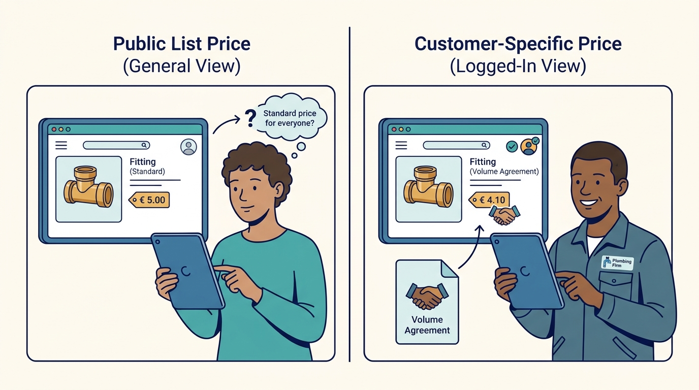
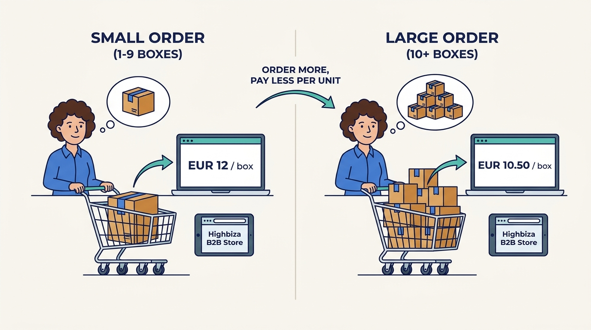
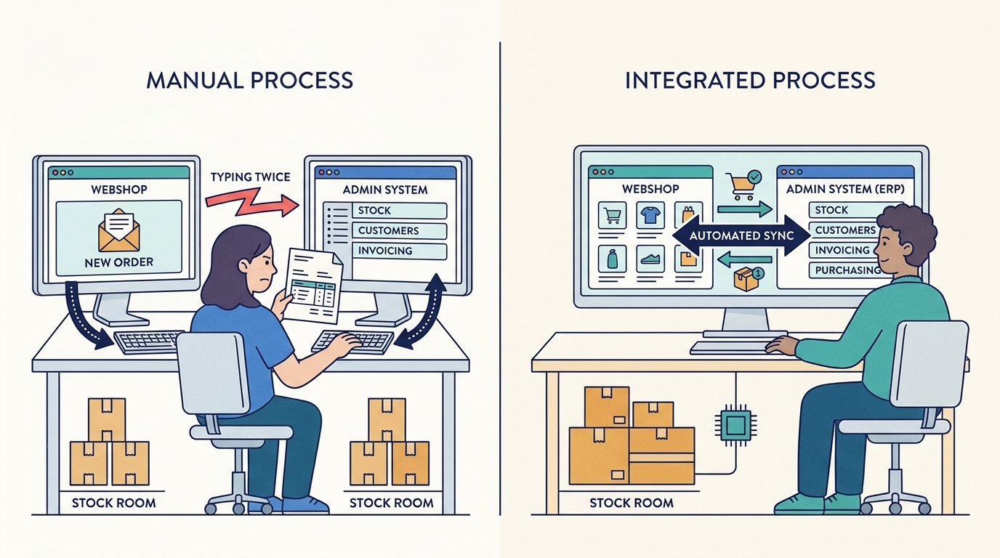
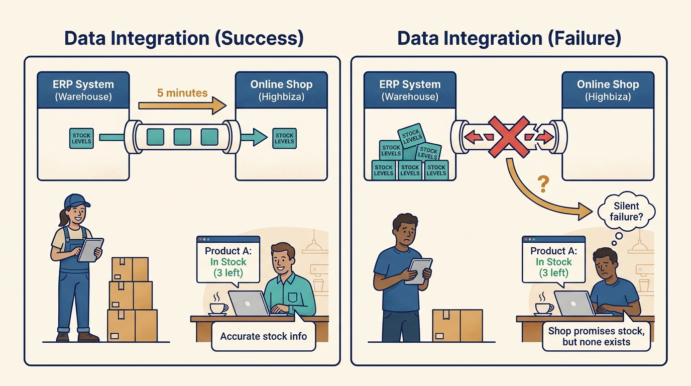
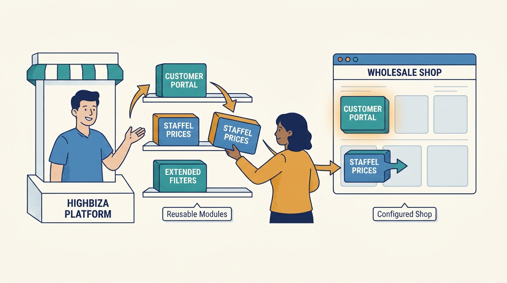
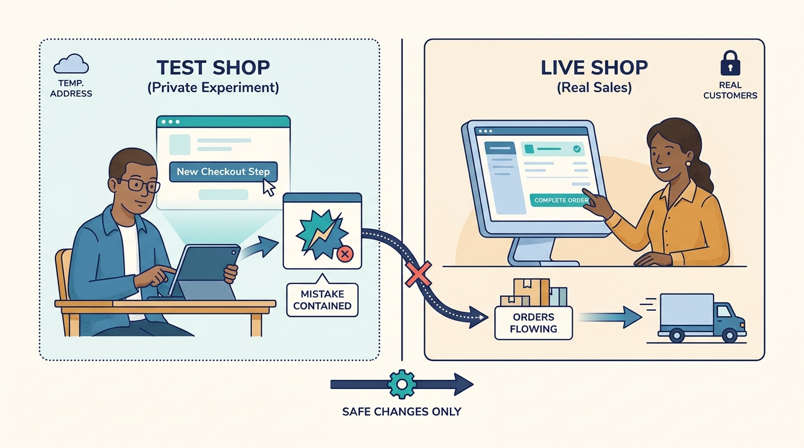
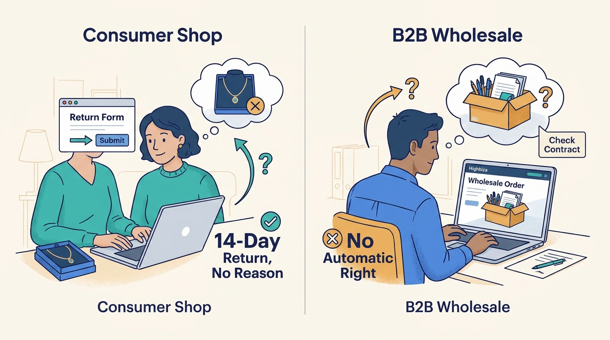

Wholesaler owner
Chooses and pays for the platform.
What matters to them
More orders without more staff, predictable cost, a supplier that will still be around.
A beginner's guide
Who this is for
A curious adult coming from a different field, with no assumed industry knowledge.
What this guide covers
How wholesalers and other trading companies sell online to business customers through a webshop platform, using Highbiza in the Netherlands as the running example. Covered: who is involved, key ideas such as customer-specific prices and ERP integration, a short history, a worked example, economics and challenges. Left out: logistics and warehouses in depth, marketplaces as businesses, and the internal technology of the platform. Geography: mostly the Netherlands and the EU.
01
Explain why a wholesaler's webshop differs from a consumer webshop.
Describe who uses, pays for and runs a B2B webshop platform.
Explain customer-specific pricing, ERP integration and building blocks in plain words.
Follow a trade order from search to delivery and name where it can go wrong.
Describe one real trade-off a platform supplier faces.
02
A wholesaler buys goods in bulk from manufacturers and sells them to other businesses: installers, shops, restaurants, garages. For decades those customers ordered by phone, fax, email or through a sales rep. A B2B (business-to-business) e-commerce platform is the software that lets those customers order online themselves, at their own negotiated prices, while the order flows straight into the wholesaler's administration.
Highbiza, a software company from Hengelo in the Netherlands, sells such a platform. Since 2025 it belongs to Katapull, a Dutch group of commerce software companies.
Wholesale ordering is repetitive: the same buyer orders the same screws every week. When people type those orders by hand, they make mistakes and cost money. Moving routine orders online frees staff for advice and exceptions, and lets the business grow without hiring an ever-larger order desk.
03
Chooses and pays for the platform.
What matters to them
More orders without more staff, predictable cost, a supplier that will still be around.
Runs the shop day to day: pages, products, campaigns.
What matters to them
Changing things quickly without waiting for developers.
Keeps stock, prices and orders consistent with the back-office system.
What matters to them
Data that matches and changes that do not break things.
An installer or shopkeeper who orders for work.
What matters to them
Their own prices, fast reordering and reliable delivery.
A private shopper on a retail or direct-to-consumer shop.
What matters to them
Trustworthy payment, delivery choice, easy returns.
Builds, hosts, tests and supports the software.
What matters to them
Many customers on one maintainable platform.
04
A price agreed with one customer or a group of customers, rather than a public list price.

If the shop shows the wrong price, the invoice will differ and trust breaks; this is the core of B2B webshops.
Click the image to open it in a new tab.For example
A plumbing firm pays EUR 4.10 for a fitting that lists at EUR 5.00 because it buys in volume.
Why it matters
If the shop shows the wrong price, the invoice will differ and trust breaks; this is the core of B2B webshops.
The unit price drops as the quantity ordered rises.

Buyers plan order sizes around these tiers, so the shop must calculate them exactly.
Click the image to open it in a new tab.For example
1-9 boxes at EUR 12, 10 or more at EUR 10.50.
Why it matters
Buyers plan order sizes around these tiers, so the shop must calculate them exactly.
The wholesaler's administrative backbone for stock, purchasing, customers and invoicing.

The webshop must take its products, prices and stock from the ERP and send orders back, or staff end up typing things twice.
Click the image to open it in a new tab.For example
Exact Online, Microsoft Business Central or Logic4.
Why it matters
The webshop must take its products, prices and stock from the ERP and send orders back, or staff end up typing things twice.
Software that automatically moves data between two systems.

When an integration silently fails, the shop promises stock that does not exist.
Click the image to open it in a new tab.For example
Every five minutes, stock levels from the ERP are copied into the shop.
Why it matters
When an integration silently fails, the shop promises stock that does not exist.
A reusable piece of shop functionality that can be switched on for a customer.

Reusing blocks keeps cost and risk down; every bespoke change makes maintenance harder.
Click the image to open it in a new tab.For example
Highbiza says it has over 100, such as a customer portal, staffel prices or extended filters.
Why it matters
Reusing blocks keeps cost and risk down; every bespoke change makes maintenance harder.
A private copy of the shop where changes are tried before they reach real customers.

It separates experimenting from selling, so a mistake does not stop orders.
Click the image to open it in a new tab.For example
A new checkout step is tested on a temporary web address first.
Why it matters
It separates experimenting from selling, so a mistake does not stop orders.
EU consumers may cancel most online purchases within 14 days without giving a reason.

Consumer shops must make this easy; business buyers usually do not have this right.
Click the image to open it in a new tab.For example
A shopper fills in an online return form for a necklace they do not like.
Why it matters
Consumer shops must make this easy; business buyers usually do not have this right.
05
These turning points are simplified; they describe the Dutch context of the running example.
Trade orders were placed by phone, fax and through sales reps, typed into an administration system by an order desk.
What this helps explain
This manual pattern is what B2B webshops still replace today.
Open-source shop software such as Magento and WooCommerce made online shops affordable; many wholesalers built shops with agencies and plug-ins.
What this helps explain
Years of add-ons often left shops slow and fragile, which is why many later replatform.
The Hengelo company previously known as UWKM renamed itself Highbiza to focus on e-commerce and complex platforms.
What this helps explain
Shows the shift from general web building to specialised commerce platforms.
SaaS platforms with fixed monthly packages, managed hosting and standard ERP connectors became the norm for mid-sized traders.
What this helps explain
Buyers now compare predictable subscriptions rather than one-off projects.
Highbiza joined the Katapull group, which combines webshop, POS, ERP, marketplace, shipping, EDI, returns and (from October 2026) warehouse software.
What this helps explain
Webshops increasingly come as part of a connected commerce stack rather than standalone.
06
Fictional characters: Anna runs e-commerce at a mid-sized wholesaler of heating parts. Bram is an installer who buys there. Numbers are illustrative.
Bram opens the wholesaler's shop on his phone and logs in. The shop recognises his company and shows his prices, not the list prices.
Why this step matters
Without his own prices he would phone to check, which defeats the purpose.
He filters valves by connection size and brand and opens a datasheet to confirm the right part.
Why this step matters
Technical products are easy to confuse; good filters prevent wrong orders.
The shop says 14 in stock and offers next-morning delivery. The stock figure came from the ERP minutes ago.
Why this step matters
Promises must match reality; a stock-out after ordering costs him a job.
From his order history he adds his weekly fittings in one click and places the order on account.
Why this step matters
Routine reordering is where the time savings are.
An integration sends the order to the ERP, which reserves stock and later produces the invoice. A shipping label is created for the carrier.
Why this step matters
No one types the order again, so the invoice matches the shop.
Anna publishes a winter-service campaign page herself in the content system, after checking it in the test environment.
Why this step matters
Marketing can act the same day instead of waiting for a developer.
The outcome
Bram ordered in minutes without a call, the order desk handled none of it, and Anna ran a campaign alone. Success for the wholesaler means a growing share of orders coming in this way.
07
Every order a customer places online is one the order desk does not type. The wholesaler pays the platform a monthly fee plus a one-off setup fee.
For example
Highbiza's packages start from EUR 149 a month plus EUR 1,490 one-off and rise with product and order limits.
The buyer does not pay for the shop but gains speed and certainty; if it is slower than phoning, they will not use it.
For example
An installer reorders weekly items from history instead of waiting on hold.
A platform supplier earns more when many customers share the same building blocks, because one fix serves all. Custom work pays once but costs maintenance forever.
For example
Highbiza notes that a problem solved in one block benefits every shop using it.
Inside a group like Katapull, a shop customer may also buy ERP, shipping or marketplace software from sister companies, so connections between them have commercial value.
For example
Highbiza lists Logic4, Vendit, EffectConnect and DeliveryMatch among its integrations.
08
Prices, stock and customers live in the ERP but are shown by the shop; copying data takes time and can fail.
The competing needs
Frequent syncing is accurate but heavy; infrequent syncing is light but stale.
In practice
A price change in the ERP at 9:00 still shows the old price in the shop at 9:30.
How people respond, and its limits
Standard connectors with monitoring and retries; their limit is that every ERP is set up differently.
Every wholesaler believes its processes are special.
The competing needs
Custom features win the deal but make updates riskier and costlier.
In practice
A bespoke checkout step breaks after a platform update.
How people respond, and its limits
Turn requests into reusable blocks where possible and test custom work in staging; limits remain for truly unique needs.
Moving from an old shop means moving data, links and habits at once.
The competing needs
A fast cut-over is cheaper; a careful parallel run is safer.
In practice
Forgotten redirects make old product links disappear from Google.
How people respond, and its limits
Test environments, data clean-up and redirect plans; still, rankings can dip temporarily.
They expect different prices, payment terms and legal rights.
The competing needs
One shop is cheaper to run; two separate experiences are clearer.
In practice
Consumers need a withdrawal form; business buyers need payment on account.
How people respond, and its limits
Customer groups that switch prices and rules per visitor.
09
A better way to understand it
Its core is personal prices, assortments, reordering and tight ERP integration; the login is only the entry point.
A better way to understand it
Updates, security, tests, integrations and content continue for as long as the shop exists.
A better way to understand it
Each custom feature raises maintenance cost and update risk; reusable blocks often serve better.
10
Wholesale webshops replace routine phone and email ordering with self-service at negotiated prices.
The shop is only as good as its connection to the ERP.
Platform suppliers balance standard building blocks against custom wishes.
Business buyers and consumers need different prices, payment and legal treatment.
Groups like Katapull bundle the shop with ERP, shipping, marketplaces and returns.
11
Pause and think through each situation, then open the answer.
Because the shop does not show their own price or reliable stock.
The reasoning
Customer-specific prices and accurate stock are what make self-service trustworthy; without them, phoning is safer.
Orders would not reach the ERP, so goods would not ship and invoices would not be made.
The reasoning
The integration is the hand-off between taking and fulfilling the order; monitoring is needed to notice failures.
Because it adds maintenance and update risk that standard building blocks avoid.
The reasoning
A fix in a shared block helps all shops; a custom feature must be maintained separately.
12
Which of your ERP's data is clean enough to show to customers?
How often do prices and stock need to sync for your customers to trust them?
Which of your requirements are truly unique, and which could be standard blocks?
What happens to your orders if an integration fails at night?
13
The supplier's own description of building blocks, test environments and quality checks (Dutch).
A concrete list of wholesale webshop features (Dutch).
How a webshop fits into a wider group of commerce software (Dutch).